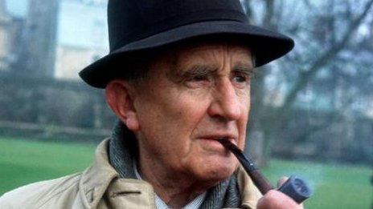

J.R.R.Tolkien
John Ronald Reuel Tolkien (3 January 1892 – 2 September 1973) was an English writer, poet, philologist, and university professor who is best known as the author of the classic high-fantasy works The Hobbit, The Lord of the Rings, and The Silmarillion. He served as the Rawlinson and Bosworth Professor of Anglo-Saxon and Fellow of Pembroke College, Oxford, from 1925 to 1945 and Merton Professor of English Language and Literature and Fellow of Merton College, Oxford from 1945 to 1959. He was at one time a close friend of C. S. Lewis—they were both members of the informal literary discussion group known as the Inklings. Tolkien was appointed a Commander of the Order of the British Empire by Queen Elizabeth II on 28 March 1972. After Tolkien's death, his son Christopher published a series of works based on his father's extensive notes and unpublished manuscripts, including The Silmarillion. These, together with The Hobbit and The Lord of the Rings form a connected body of tales, poems, fictional histories, invented languages, and literary essays about a fantasy world called Arda, and Middle-earth within it. Between 1951 and 1955, Tolkien applied the term legendarium to the larger part of these writings. While many other authors had published works of fantasy before Tolkien, the great success of The Hobbit and The Lord of the Rings led directly to a popular resurgence of the genre. This has caused Tolkien to be popularly identified as the "father" of modern fantasy literature or, more precisely, of high fantasy. In 2008, The Times ranked him sixth on a list of "The 50 greatest British writers since 1945". Forbes ranked him the 5th top-earning "dead celebrity" in 2009
Youth
While in his early teens, Tolkien had his first encounter with a constructed language, Animalic, an invention of his cousins, Mary and Marjorie Incledon. At that time, he was studying Latin and Anglo-Saxon. Interest in the language soon died away, but Mary and others, including Tolkien himself, invented a new and more complex language called Nevbosh. The next constructed language he came to work with, Naffarin, would be his own creation. In 1911, while they were at King Edward's School, Birmingham, Tolkien and three friends, Rob Gilson, Geoffrey Bache Smith and Christopher Wiseman, formed a semi-secret society they called the T.C.B.S. The initials stood for Tea Club and Barrovian Society, alluding to their fondness for drinking tea in Barrow's Stores near the school and, secretly, in the school library. After leaving school, the members stayed in touch and, in December 1914, they held a "council" in London at Wiseman's home. For Tolkien, the result of this meeting was a strong dedication to writing poetry. In 1911, Tolkien went on a summer holiday in Switzerland, a trip that he recollects vividly in a 1968 letter,noting that Bilbo's journey across the Misty Mountains ("including the glissade down the slithering stones into the pine woods") is directly based on his adventures as their party of 12 hiked from Interlaken to Lauterbrunnen and on to camp in the moraines beyond Mürren. Fifty-seven years later, Tolkien remembered his regret at leaving the view of the eternal snows of Jungfrau and Silberhorn ("the Silvertine (Celebdil) of my dreams"). They went across the Kleine Scheidegg to Grindelwald and on across the Grosse Scheidegg to Meiringen. They continued across the Grimsel Pass, through the upper Valais to Brig and on to the Aletsch glacier and Zermatt. In October of the same year, Tolkien began studying at Exeter College, Oxford. He initially studied Classics but changed his course in 1913 to English Language and Literature, graduating in 1915 with first-class honours in his final examinations.
Academic and Writing Career
On 3 November 1920, Tolkien was demobilised and left the army, retaining his rank of lieutenant. His first civilian job after World War I was at the Oxford English Dictionary, where he worked mainly on the history and etymology of words of Germanic origin beginning with the letter W.In 1920, he took up a post as Reader in English Language at the University of Leeds, and became the youngest professor there.While at Leeds, he produced A Middle English Vocabulary and a definitive edition of Sir Gawain and the Green Knight with E. V. Gordon, both becoming academic standard works for several decades. He also translated Sir Gawain, Pearl, and Sir Orfeo. In 1925, he returned to Oxford as Rawlinson and Bosworth Professor of Anglo-Saxon, with a fellowship at Pembroke College. During his time at Pembroke College Tolkien wrote The Hobbit and the first two volumes of The Lord of the Rings, whilst living at 20 Northmoor Road in North Oxford (where a blue plaque was placed in 2002). He also published a philological essay in 1932 on the name "Nodens", following Sir Mortimer Wheeler's unearthing of a Roman Asclepeion at Lydney Park, Gloucestershire, in 1928.
Final Years
Edith Tolkien died on 29 November 1971, at the age of 82. According to Simon Tolkien: "My grandmother died two years before my grandfather and he came back to live in Oxford. Merton College gave him rooms just off the High Street. I went there frequently and he'd take me to lunch in the Eastgate Hotel. Those lunches were rather wonderful for a 12-year-old boy spending time with his grandfather, but sometimes he seemed sad. There was one visit when he told me how much he missed my grandmother. It must have been very strange for him being alone after they had been married for more than 50 years." Tolkien was appointed by Queen Elizabeth II a Commander of the Order of the British Empire in the 1972 New Year Honours and received the insignia of the Order at Buckingham Palace on 28 March 1972. In the same year Oxford University conferred upon him an honorary Doctorate of Letters. Tolkien had the name Lúthien engraved on Edith's tombstone at Wolvercote Cemetery, Oxford. When Tolkien died 21 months later on 2 September 1973, at the age of 81,he was buried in the same grave, with Beren added to his name. The engravings read: Edith Mary Tolkien Lúthien 1889–1971 John Ronald Reuel Tolkien Beren 1892–1973 Wolvercote Cemetery, Oxford In Tolkien's Middle-earth legendarium, Lúthien was the most beautiful of all the Children of Ilúvatar, and forsook her immortality for her love of the mortal warrior Beren. After Beren was captured by the forces of the Dark Lord Morgoth, Lúthien rode to his rescue upon the talking wolfhound Huan. Ultimately, when Beren was slain in battle against the demonic wolf Carcharoth, Lúthien, like Orpheus, approached the Valar, the angelic order of beings placed in charge of the world by Eru (God), and persuaded them to restore her beloved to life.
A Video with a Rare Interview featuring Tolkien
Some great archival footage just released from BBC on Tolkien that was first aired in 1968.This is an episode from BBC's series "In Their Own Words British Authors". Official synopsis: "John Izzard meets with JRR Tolkien at his home, walking with him through the Oxford locations that he loves while hearing the author's own views about his wildly successful high-fantasy novels. Tolkien shares his love of nature and beer and his admiration for 'trenchermen' in this genial and affectionate programme. The brief interviews with Oxford students that are dotted throughout reveal the full range of opinions elicited by 'The Lord of the Rings', from wild enthusiasm to mild contempt."